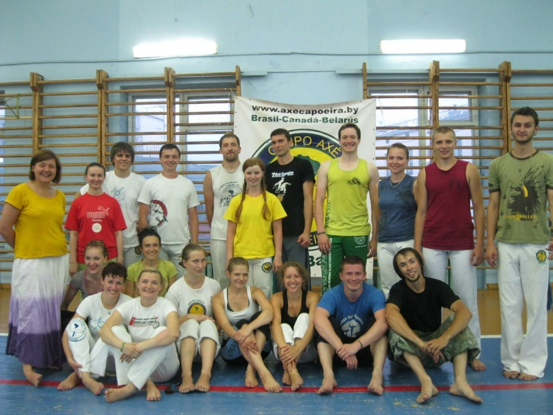

Мое путешествие от Калининграда до Улан-Удэ
Внимание! Будьте осторожны — очень длинный текст.
Этим летом выдалось мне совершить небольшое путешествие по России. Маршрут мой проходил по десятку городов и в целом выглядел так: Улан-Удэ-Иркутск-Москва-Калиниград-Минск-Киев-Одесса-Ростов-на-Дону-Москва-Великий Новгород-Санкт-Петербург-Новосибирск-Иркутск-с.Посольск (Байкал)-Улан-Удэ. И почти в каждом городе, какой мы с моей попутчицей (Аней) проезжали, мы находили хотя бы одну группу капоэйры. И старались зайти туда. О том, как это было и будет сказано далее, со всеми хронологическими данными и всеми возможными мыслями по поводу капоэйры.
01 июля 2013. Иркутск. На занятие в Иркутской капо-группе Pelo Sinal da Santa Cruz мы немного опоздали. Коля – тренер группы, был очень рад нас увидеть, так рад, что сразу же организовал роду. Обожаю капоэйристов за их радушие! По любому поводу стараются навешать тебе высокохудожественных люлей под звуки беримбау. Через час встретились с еще одним тренером – Романом, который и приютил нас на пару ночей, за что ему огромное спасибо!
03 июля 2013. Москва. Пришли на тренировку в FICA. Это наша первая встреча с анголейруш. Занятие вел Leo. Тренировка была не интенсивной, а скорее ознакомительной. Учили базу КА, играли на музыкальных инструментах, пели песни. Я подмечал различия в музыке. Музыкальные занятия, уровень игры и вокала в группе отличные, но пожогать не получилось, а жаль.
04.07.2013 и 07.07.2013. Калининград. Группа Arte de Gingar. В Калининграде они существуют и активно развиваются уже 7 лет. Новых связок в Калининграде мы не выучили, но заряд энергии и мотивации получили очень хороший. Во время открытой роды очень хорошо поиграли в анголе и очень хорошо огребли на более высоких скоростях. Игра, в целом, очень динамичная и со стороны очень эффектная. Бесконечные круговые удары армада-армада-армада-армада вплетаются акробатические элементы, сложные и не очень. Поговорили о традициях этой группы: об отсутствии хлопков участников формирующих роду, об обязательном «поклоне» батерии перед началом игры и в конце, затронули тему соревнований.
Помимо прочего, очень приятно было, когда нас пытались вытащить на море, в пиццерию и еще куда-нибудь. Очень гостеприимные ребята.
10.07.2013. Минск. Расписание занятий во всех группах совпадали и мы очень долго выбирали в какую группу все-таки пойти на тренировку. Пришли в Axe-Capoeira и не прогадали. Эта тренировка оказалась одной из самых интенсивных, одной из самых убийственных (в хорошем смысле слова). К концу занятия, точнее к знаменующей конец занятия, финальной роде присоединились камарады из FICA и Дориан из Arte de Gingar. Впечатлений от этого вечера было масса, жаль, что на самом интересном месте роды у камеры села батарея.
Вечером нас приютил у себя Дима из группы Axe.
Очень приятно видеть, что в других городах люди относятся к тебе настолько доброжелательно и открыто, что готовы не только пустить на тренировку, но и пригласить к себе домой.
12.07.2013. Киев. Без спроса и приглашения заявились на занятия в группу ABADA. Не смотря на сказки о закрытость группы, нас были очень рады видеть. Четкая, безукоризненная техника и грамотное объяснение движений, хорошо организованное занятие – это отличительная черта ABADA. Угловатость в игре (видимо дань стандартизации) и какая-то напряженность, привычная для участников этой группы передалась и мне. Очень тяжело играть с ними в их капоэйру.
14.07.2013. Боярка. Волею судьбы оказались мы с Аней в Боярке, ночью. Не самое хорошее место и время. Утром же выбираясь по проселочной дороге, через небольшую, но тем не менее глухую лесополосу наткнулись мы на странное объявление о наборе в группу капоэйра. Как и здесь тоже есть капоэйра? Сходить на тренировку не удалось, поэтому мы просто запечатлели картинку.
15.07.2013. Одесса. Несмотря на разнообразие групп в этом славном городе мы решили особо никуда не ходить. Хотелось просто отдохнуть. Это ведь Одесса!
Будучи на берегу моря под раскаленным солнцем мы играли капоэйру. К нам подошла маленькая девочка, лет, наверное, 7 или 8 — Вика, она спросила или нет, сказала: „Мммм, вы играете капоэйру“ — оказалось, что она сама занимается капоэйрой уже 2 года (из группы Dende). Упустить такой момент мы с Аней не могли и каждый из нас поиграл с Викой. За это Аня еще долго подшучивала надо мной, что я в Одессе избил маленькую девочку.Играть капоэйру на берегу моря оказалось достаточно тяжелым занятием, т.к. руки и ноги постоянно проваливались в песок, зарываясь. Сохранять равновесие даже делая жингу очень тяжело, а по поводу какой-то прыжковой технике или сложной акробатики даже думать противопоказано.
Быть может именно capoeira na beira do mar и сформировала технику КА? А уже дальше, по мере развития и распространения капоэйры и при переходе на более твердые и устойчивые поверхности начала изменяться ее техника все более и более усложняясь. Расширились физические возможности игроков и самой игры тоже. Как знать?
16.07.2013. Одесса. Нам очень повезло с датами нашего путешествия: сегодня состоится первое занятие с contra-mestre Veo (ACANNE) в Одессе. Первый тренировочный день, как обычно бывает, начался не торопясь: пока все подошли, пока раскачались… Контраместри всем пришедшим подарил ленточки «Lembranca do senhora do Bomfim da Bahia» — на удачу. Мелочь, а приятно. Традиционно (для ACANNE) занятие началось с регги, чтобы расслабиться, затем пошли простенькие связки и упражнения. На занятии было очень много раштейрас – самых опасных движений из арсенала капоэйриста и упражнений на взаимодействие. В целом, ничего сложного не было, но моя футболка промокла так, как будто я окунулся в море с головой.
Чем понравилась тренировка, так это тем, что данные тренером (мастером) связки не просто заучиваются и репетируются, но немного видоизменяются и дополняются. Связка становится не просто последовательностью движений, алгоритмом, который необходимо отыграть, связка – это мини-игра, где определены «главные» движения (стержень), вокруг которого эта игра и строится.
Постепенно занятие подошло к концу, как всегда незаметно и неожиданно. В конце занятия очень хотелось увидеть роду, но… не было. Желая исправить это недоразумение хоть как-то я подошел к контра-местре Вео и пригласил его поиграть, на что он с радостью согласился. Немного поиграли, чего мне явно не хватило.
Вечер провели с Жорой и Вео за увлекательным рассказом и жизнеописанием веселого бразильца.
24.07.2013. Москва. Ехали очень долго. Почти неделя прошла без тренировок. И вот, наконец, настала возможность оторваться по полной катушке. Пришли в одну из достаточно интересных московских школ (название я умолчу), где с нас за тренировку запросили деньги (администратор). Мы задумались. В принципе, я не против такого отношения в капоэйре. Тренерство, преподавание – это огромный труд, да и кто мы такие, чтобы давать нам какие-то уроки и оказывать помощь бесплатно? Мы не пошли на тренировку. Все вроде бы правильно, однако, на душе остался какой-то осадок, ощущение лживости любого учения (не обязательно капы), если оно дается за деньги. Наверное, потому, что нельзя человека чему-то научить, он сам должен этому чему-то научиться. Нельзя за человека пройти его пути, можно помочь его найти. Помощь – это помощь, а если за нее платят деньги – это уже услуга или товар. Учитель учит не для того, чтобы стать богатым, продавая свои знания. Он через учеников приходит к чему-то большему – к истине. Хотя, как знать…25.07.2013. Москва. Среди узких запутанных московских улочек, в тенистой зелени рябин и тополей искали фитнес-клуб „NRG“. Искали долго и нашли. Маленький и уютный он оставил о себе много приятных воспоминаний. Здесь состоялась долгожданная тренировка, только ради которой мы задержались в Москве еще на один день. Все ради знакомства с contra-mestre Tico из CDO. Мы попали на тренировку для новичков, поэтому было все достаточно просто, но при этом держался очень хороший темп тренировки и, в качестве финала, который выжал из нас все соки – круговая тренировка. Хотя, если честно, я был бы рад продолжить и, скажем, поиграть.
В конце тренировки хотел заплатить за занятие (видно сказалось влияние Москвы), но сказали – не надо и пригласил нас на открытую роду в CDO Moscow, а также стали звать в гости, соблазняя всякими нямками и X-Boxом.
26.07.2013. Москва. Открытая рода в CDO Moscow. Собрались несколько весьма значительных групп CDO Moscow, группа CM Tico и Real Capoeira. Все началось с макулеле, в качестве разминки, затем образовалось 2 роду, так же для разогрева организма. Когда же ритмы игры ускорился и воодушевление усилилось роды были объединены в одну общую.
Открытая рода очень сильно мотивировала меня и мою попутчицу. Еще до полуночи кровь кипела в жилах.
29.07.2013. Санкт-Петербург. В очередной раз опоздали на тренировку. Занятия по капоэйре почему-то проходят в таких «злачных» местах, которые на карте очень тяжело отыскать. Немного поплутав мы пришли в Российский Центр Капоэйры — Cordao de Ouro СПб. Prof.Ta-Russo был удивлен, но тем не менее рад нас видеть у себя в зале. Связки и движение на тренировке подавались с определенной методологией, точным знанием кому, когда и что давать, тихо, спокойно, все под стать тренеру. В каждом движении концентрация, сосредоточение и собранность, спокойствие и абсолютный контроль действий, никакой суеты – вот, что воплощается в Ta-Russo, в его учениках, в самой атмосфере тренировки.
В конце занятия состоялась рода. Завороженный движениями старших учеников я сидел, не смея нарушить гармонию игры. Мне хотелось смотреть, поглощать эту игру, похожую на стихию, на огонь и воду, на соединение в движениях урагана и тверди земли. За этим можно было следить бесконечно.
И я там был, и мед там пил… конечно, я вышел в роду, поиграл – старался набраться уму разуму, усмирить тот хаос, едва удержимый, едва оформленный, что имеется в моих движениях.
Это был очередной удар под дых. Стимул. Оказывается, пахать мне еще и пахать, и не перепахать то поле, что разделяет меня и белый пояс мастера.
Тренировка окончена. Но «Salve capoeira!» повисла в воздухе. Часть учеников засобиралась и ушла, но большинство рассредоточилось по залу и продолжало заниматься: кто отрабатывал связки, кто-то удары и акробатику, кто-то подтягивался и отжимался, кто-то тянулся – без пинка тренера о том, что им делать, все всё делали сами. И это здорово.
31.07.2013. Санкт-Петербург. И снова мы зашли в CDO. Группу Sethа мы просто не могли пропустить. Нам столько советовали зайти к нему и в Калининграде, и в Минске, и в Одессе, что это было просто необходимо. В группе оказалось много новичков, тем не менее, занятие получилось очень интересное, а время пролетело слишком быстро. В конце, наверное, это все ради нас, состоялась небольшая рода. Играть, да и просто общаться было приятно и комфортно.
08.08.2013. Новосибирск. Pelo Sinal da Santa Cruz. Inst.Po-Po (Бруно). Опять повезло на новичков и мы отрабатывали базовую технику. Бруно объяснил несколько нюансов в жинге и ау, которые я не знал и никогда даже не задумывался об этом, но которые очень важны и являются фундаментальными. Конец тренировки ознаменовался учебной родой и тортиками, в честь организации федерации капоэйра в г. Новосибирск.12.08.2013. Новосибирск. Выходные мы провели с Бруно, гуляли, общались, отдыхали. Слушали его истории и учились. Откровенно говоря я хотел сходить в группу Muzenza, что также имеется в Новосибирске. Но, что-то не срослось, и я опять пошел на класс к Бруно. Очень, кстати совсем не пожалел. Сегодня была очень жесткая и агрессивная тренировка, а рода больше походила на спарринг. Без травм конечно не обошлось, но было очень интересно и познавательно узнать и прочувствовать и такой аспект капоэйры.
17.08.2013. Посольск. С Байкала дует холодный пронизывающий ветер, а солнце при этом едва греет. Не смотря на то, что все еще лето, многие люди (на пляже!) уже оделись в осенние куртки. Сегодня открытие фестиваля водных видов спорта на Байкале и в рамках фестиваля будут также организованы мастер классы по различным дисциплинам, среди которых и капоэйра. Мастер класс по капоэйре должен был проводится совместно иркутской федерацией капоэйра и улан-удэнской академией современной капоэйры, однако капоэйристов было совсем немного. Собрав все силы и волю в кулак мы с тренером из Иркутска (Ромой) провели этот мастер класс, получилось, вроде, неплохо.
18.08.2013. Посольск. Немного поиграли, подурачились, повадиярили с иркутянами и поехали домой – в Улан-Удэ, рассказывать камарадуш из академии о наших приключениях.
Капоэйра уже надежно прижилась в промерзшей Российской почве, кто бы что ни говорил. Практически во всех городах существует это межнациональное явление. И камарадуш в различных городах, независимо от группы и национальной принадлежности с радостью готовы принять не только на тренировках, но и у себя дома. И я рад, что с каждым днем капоэйра становится все более и более популярной, что она открывается миру и мир становится более свободным.Спасиб всем, кто осилил текст. Спасибо всем, кто встретил и принял нас.